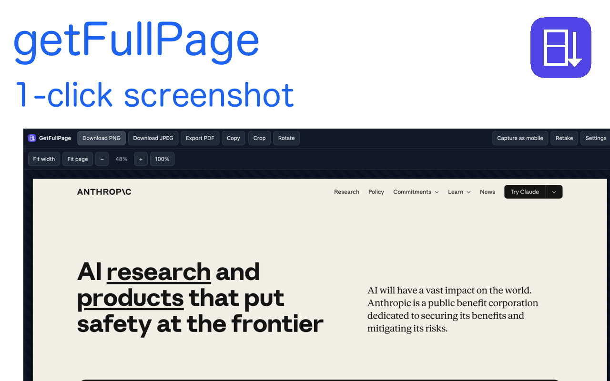

Full-page capture
Captures beyond the viewport, even on infinite-scroll pages.
Free Chrome extension. 100% local processing — no account, no upload, no server.

Capture long landing pages, product flows, dashboards, docs, and mobile layouts without stitching screenshots by hand.
Captures beyond the viewport, even on infinite-scroll pages.
Export any webpage as a clean PDF with smart page breaks.
Capture how your page looks on any device.
PNG, JPEG, or PDF with customizable quality.
Custom templates with page title, date, and dimensions.
Everything stays on your device. Zero data collection.
GetFullPage from the Chrome Web Store and pin it to your toolbar.
Visit the page you want to capture and click the GetFullPage icon.
Save your full-page screenshot or export it as a polished PDF right away.
No sign-up. No upload. Just one click from webpage to shareable image or PDF.